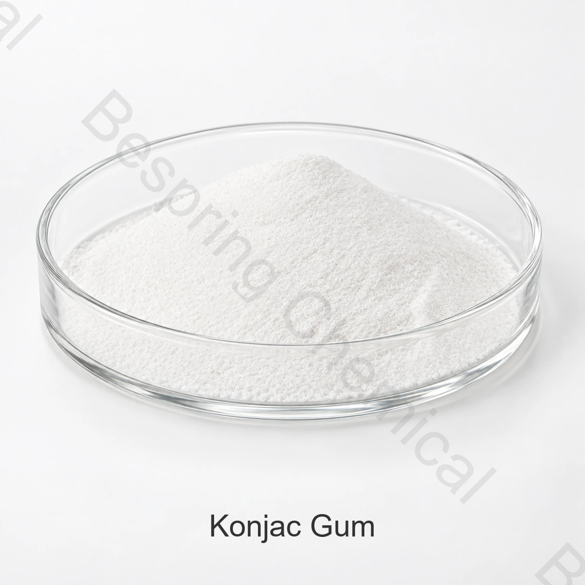

Thịt bị nấu chín
Đánh giá độ dính nước, cắn, sản lượng và tương thích với muối và các loại thủy tinh khác.
Thành phần cấp thực phẩm · Hydcolloid và làm mềm thành phần · INS 425
Kẹo cao su Konjac là một loại glucomannan hydrocolloid được dùng cho chất đặc, ràng buộc nước, biến đổi kết cấu và cấu trúc gel trong các loại thức ăn đã chọn.

Ảnh sản xuất # xác nhận cấp và bao bì khi đặt thứ tự
Chia sẻ thức ăn, giới hạn mục tiêu, phương pháp thử nghiệm, số lượng và đích đến.
Tài liệu chất lượngKosher, Halal và ISO
Thu dọn chuẩnTúi giấy kraft 25kg
Comment20 MT không có pallets; 15 MT với pallets / 20GP
Bằng chứng bantchĐặc tả hiện thời và COA nếu cần thiết
Tổng quát sản phẩm
Gôm konjac cấp thực phẩm là bột hoặc gôm giàu glucomannan có nguồn gốc từ cây konjac. FAO/JECFA liệt kê bột konjac với INS 425 và CAS 37220-17-0.
Tính hợp tác thương mại phụ thuộc vào điểm chính xác, nguồn, phương pháp thử nghiệm, ứng dụng và các quy tắc thị trường đích đến.
Kiểm tra ứng dụng
Chọn ứng dụng thực phẩm cho phép, đánh giá liều lượng và hiệu suất trong sản phẩm đã hoàn thành.
Đánh giá độ dính nước, cắn, sản lượng và tương thích với muối và các loại thủy tinh khác.
Sử dụng thử nghiệm để tối ưu hóa việc đình chỉ, độ cao và cảm giác miệng.
Chọn độ đàn hồi và điểm glucomannann cho kết cấu gel mục tiêu và tiến trình.
Hỗ trợ cơ thể, kiểm soát nước và kết cấu ổn định trong hệ thống tương thích.
Đặc điểm thương mại
Những đặc điểm tham khảo thương mại này tách biệt với các kết quả và yêu cầu điều chỉnh hàng loạt của COA. Hãy cân nhắc điểm, cơ bản phân tích và các phương pháp thử nghiệm cho thứ tự của bạn.
Vuốt hoặc dùng bàn phím để đọc tất cả các cột
| Mục thử ra | BPKJ3 | BPKJ5 | BPKJ7 | BPKJ9 | BPKJ11 | BPKJ13 |
|---|---|---|---|---|---|---|
| Kích cỡ Lưới, 90% qua | ≥120 | ≥120 | ≥120 | ≥120 | ≥120 | ≥120 |
| Glucomannan, nền khô | ≥70% | ≥75% | ≥80% | ≥85% | ≥85% | ≥90% |
| Độ đa dạng | ≥15,000 mPa·s | ≥22,000 mPa·s | ≥25,000 mPa·s | ≥30,000 mPa·s | ≥32,000 mPa·s | ≥36,000 mPa·s |
| Độ mở/ Tiêu: | ≤12.0% | ≤11.0% | ≤10.0% | ≤10.0% | ≤10.0% | ≤10.0% |
| Ash | ≤4.5% | ≤4.5% | ≤3.0% | ≤3.0% | ≤3.0% | ≤3.0% |
| chì (Pb) | ≤0.8 mg/kg | ≤0.8 mg/kg | ≤0.8 mg/kg | ≤0.8 mg/kg | ≤0.8 mg/kg | ≤0.8 mg/kg |
| Thạch tín (A) | ≤3.0 mg/kg | ≤3.0 mg/kg | ≤3.0 mg/kg | ≤3.0 mg/kg | ≤3.0 mg/kg | ≤3.0 mg/kg |
| Sulffur dioxide | ≤900 mg/kg | ≤900 mg/kg | ≤900 mg/kg | ≤900 mg/kg | ≤900 mg/kg | ≤900 mg/kg |
| pH | 5–7 | 5–7 | 5–7 | 5–7 | 5–7 | 5–7 |
| Tổng số đĩa | ≤5,000 | ≤5,000 | ≤5,000 | ≤5,000 | ≤5,000 | ≤5,000 |
| đặc và men | ≤100 | ≤100 | ≤100 | ≤100 | ≤100 | ≤100 |
Ghi chú cụ thể và nhân dạng: Gôm konjac là polyme glucomannan có khối lượng phân tử cao và biến thiên, không phải phân tử nhỏ biểu diễn bằng C6H10O5. So sánh các cấp theo hàm lượng glucomannan, độ nhớt và kích thước hạt. Thống nhất nồng độ, nhiệt độ và phương pháp đo độ nhớt cùng đơn vị và phương pháp kết quả vi sinh trong chỉ tiêu có chữ ký.
Hỗ trợ độ phân giải
Yêu cầu các phương pháp thử nghiệm và đại diện hoặc hàng loạt COA được ký hiện nay.
Kiểm tra các tài liệu Halal và ISO cho điểm số chính xác, nguồn và nơi sản xuất.
ôn lại FAO/JECFA Konjac dữ liệu bột và áp dụng luật thị trường đích đến riêng.
Lưu trữ và xử lý
Hỏi người mua
Thịt được xử lý, các sản phẩm của Dairy, Candy và thạch, Pungs và tráng miệng là những khu vực phổ biến. sử dụng pháp luật, liều lượng và hiệu suất phải được xác nhận cho chính xác thực phẩm hoàn thành và đích đến.
Gói tài liệu tham khảo là 25 kg túi giấy kraft, số lượng tối thiểu tham khảo là 500kg.
Yêu cầu các đặc điểm đặc trưng hoặc TDS, SDS, đại diện hoặc hàng loạt COA, các phương pháp kiểm tra và ứng dụng các chứng chỉ chất lượng thực phẩm cho chính xác nơi sản xuất và cấp độ.
Cung cấp ứng dụng thực phẩm đã định, đặc điểm mục tiêu, phương pháp thử nghiệm, số lượng, đóng gói, đích, ưu tiên palet và ngày giao hàng cần thiết.
Thành phần liên quan
Xem lại danh tính, đặc điểm, ứng dụng và xem xét trợ cấp.
Xem lại danh tính, đặc điểm, ứng dụng và xem xét trợ cấp.
Xem lại danh tính, đặc điểm, ứng dụng và xem xét trợ cấp.
Tìm nguồn dựa trên chỉ tiêu kỹ thuật
Ứng dụng chia sẻ, điểm số và đặc trưng, số lượng, đóng gói, đích và tài liệu cần thiết.
Cho chúng tôi biết điểm số và điểm đến của anh để chúng tôi có thể xác nhận tài liệu nào có sẵn cho đơn đặt hàng của anh.
Một tham chiếu bên ngoài không phải là một chứng nhận hàng loạt hoặc một đặc điểm sản phẩm Bespring.